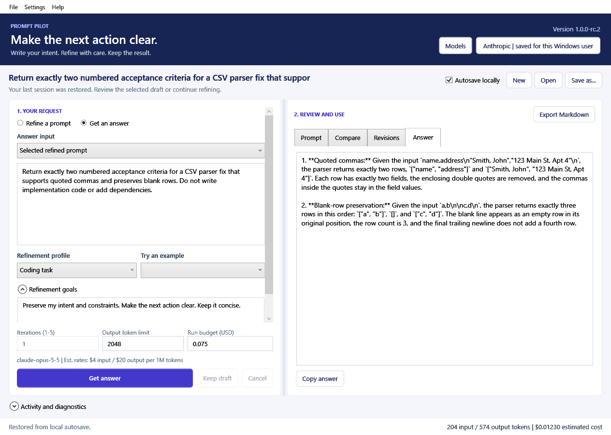

Original request
PreservedRefinement profile
Refinement goals
Preserve intent and constraints. Make the next action clear. Keep it concise.
In the desktop app: edit your request, add context or an opt-in text file, and set iterations, output limits and a run budget.
A clearer starting point
Ready to exploreRECORDED LIVE SYNTHETIC TESTS · 18 OCT 2026
A newer model earns its place.
| Model | Checks passed | Role |
|---|
No qualifying recommendation in these examples.
These full live runs preceded the final reservation fix and request-ID/token instrumentation; their adoption fingerprints are stale. Patched code passed 66 native tests. A prior rc.2 live preflight verified the budget stop. Strict checks include exact capitalization and punctuation. This small corpus does not establish general model superiority.
THE ACTUAL PRODUCT
Built for the work after the prompt.
A local Windows app with session recovery, revision history, Markdown export, cancellation and disk logs. OpenAI and Anthropic passed live desktop checks; GitHub Models remains preview.

Validation, privacy and release boundaries
Verified locally
66 native Windows tests passed after the saved-key loading correction. Live desktop Refine → Answer → reopen passed with separate models on Anthropic and OpenAI. Compiled startup, model dialog, activation and restart passed.
Still a release candidate
Unsigned. Clean-machine installation and upgrade, broader beta usefulness, trusted distribution and GitHub Models live acceptance remain open. Local checks do not establish those outcomes.
Your data in the real app
Sessions and logs are local. Generation sends the selected request and explicitly included context to your chosen provider. A provider API account is required; a chat subscription is separate.